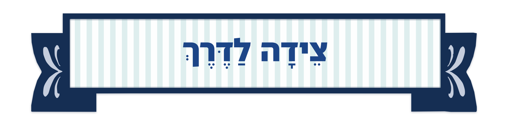

אותה אמנות בדיוק כמו שלושת המדורים — אותו סרט, אותה לוחית, אותו כחול. בלי כותרת משנה בינתיים; כשתחליט עליה היא נכנסת בשורה השנייה כמו בשאר המדורים.
הכתיב שכולם מכירים ושכתבת לי. הניקוד מלא ותקני, והיו״ד נשארת.

זה הכתיב המנוקד לפי כללי האקדמיה — בטקסט מנוקד היו״ד יורדת, כמו בפסוק "וְלָתֵת לָהֶם צֵדָה לַדָּרֶךְ". תקני יותר, אבל נראה לחלק מהקוראים כמו שגיאה.
ההמלצה שלי: א׳. הקורא לא בא לשיעור דקדוק, ו"צֵדָה" ייקרא כטעות אצל רוב האנשים. הניקוד בשניהם נכון — ההבדל הוא רק היו״ד.